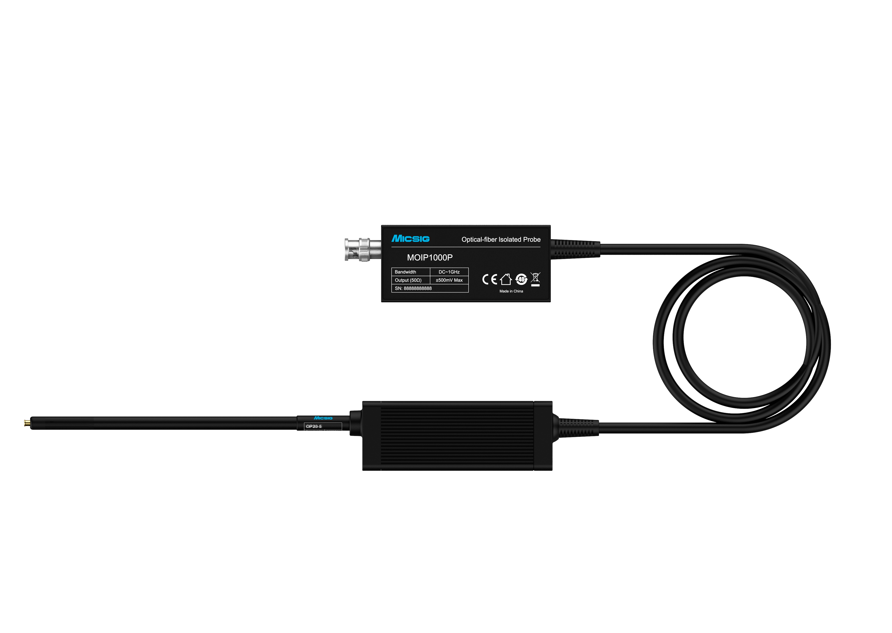

Micsig SigOFIT Gen 2 Optical Isolated Probe
Micsig SigOFIT Gen 2 MOIP probes use optical-fiber isolation for differential voltage measurement. The brochure lists five model bandwidths from 100 MHz to 1 GHz; measurement range depends on the compatible attenuator.
Ask about this product
Key specifications
SigOFIT Gen 2 product overview
Micsig product overview · Optical-fiber isolated probes
India price list
Prices supplied by VIANOVA INDUSTRIAL SOLUTIONS; subject to confirmation and availability. Our selling prices exclude GST. Confirm final taxes and quotation before ordering.
| Model | Configuration / range | Our selling price (excl. GST) | MRP |
|---|---|---|---|
| MOIP1000P | 1 GHz; 60 kVpk; 2 m fibre; OP50-1G and OP2000-1G tips; BNC | ₹1,515,473.44 | ₹1,788,259.00 |
| MOIP500P | 500 MHz; 60 kVpk; 2 m fibre; OP50-5 and OP2000-5 tips; BNC | ₹909,223.44 | ₹1,072,884.00 |
| MOIP350P | 350 MHz; 60 kVpk; 2 m fibre; OP20-3 and OP1000-3 tips; BNC | ₹386,666.25 | ₹456,266.20 |
| MOIP200P | 200 MHz; 60 kVpk; 2 m fibre; OP20-2 tip; BNC | ₹302,973.44 | ₹357,508.70 |
Request confirmed price and availability →
India price list
Prices supplied by VIANOVA INDUSTRIAL SOLUTIONS; subject to confirmation and availability. Our selling prices exclude GST. Confirm final taxes and quotation before ordering.
| Model | Configuration / range | Our selling price (excl. GST) | MRP |
|---|---|---|---|
| OP10-1G, OP20-1G, OP50-1G, OP100-1G | Range <500 V | ₹45,317.19 | ₹53,474.28 |
| OP1000-1G, OP2000-1G | ≤500 V to <2500 V | ₹48,348.44 | ₹57,051.16 |
| OP5000-1G, OP10000-1G | ≤2500 V to ≤5000 V | ₹66,535.94 | ₹78,512.41 |
| OP10-5, OP20-5, OP50-5, OP100-5, OP200-5, OP500-5 | Range <500 V | ₹25,614.06 | ₹30,224.59 |
| OP1000-5, OP2000-5 | ≤500 V to <2500 V | ₹31,676.56 | ₹37,378.34 |
| OP5000-5, OP10000-5 | ≤2500 V to ≤5000 V | ₹48,348.44 | ₹57,051.16 |
| OP10-3, OP20-3, OP50-3, OP100-3, OP200-3, OP500-3 | Range <500 V | ₹19,148.44 | ₹22,595.16 |
| OP1000-3, OP2000-3 | ≤500 V to <2500 V | ₹22,117.19 | ₹26,098.28 |
| OP5000-3, OP10000-3 | ≤2500 V to ≤5000 V | ₹39,335.94 | ₹46,416.41 |
Request confirmed price and availability →
Applications
The supplied brochure discusses high-speed switching and third-generation semiconductor testing, including SiC and GaN.
Specifications and configurations vary by model. Confirm the exact model and its operating limits in the linked Micsig PDF before selection.
Open Micsig datasheet / brochure Compare the Optically isolated probes category →
Product enquiries in India
Vianova Industrial Solutions is an authorised Micsig distributor for India. Contact the Ghaziabad team for model selection, current availability and quotations.